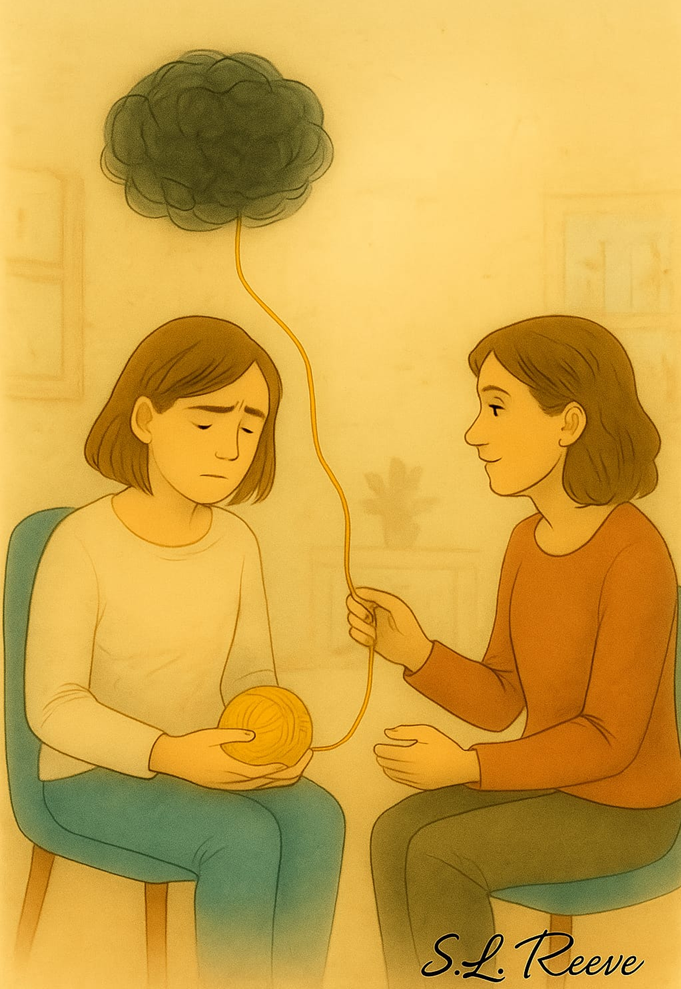

Welcome to a gentle space for healing, change and self-understanding.
At Change Mind and Body Therapy Service, I offer integrative therapy in a warm, supportive environment where you can feel heard, understood and supported as we explore whatever may be bringing you to therapy.
A calm, compassionate and non-judgemental space
Hello, my name is Sarah Reeve and I am an integrative therapist based in Harlow, Essex, offering both online and in-person therapy sessions.
I hold a BSc in Integrative Therapy and I am a registered member of the BACP, currently working towards accreditation. As an integrative therapist, I draw from a range of therapeutic approaches including person-centred, psychodynamic, Gestalt, existential and CBT modalities, adapting the way I work to suit you as an individual.
As a mother of three and someone living within a neurodiverse family environment, I understand that life can often feel emotionally complex, overwhelming and demanding at times. These experiences have strengthened my passion for creating a warm, supportive and non-judgemental space where people feel safe to explore whatever may be affecting them.
Read more about Sarah“I believe therapy is not about ‘fixing’ people, but about creating a space where you feel heard, understood and supported as we gently explore your thoughts, feelings and experiences together.”
Integrative therapy tailored to you
I believe therapy should be about creating a safe and supportive space where you feel comfortable to talk through whatever may be on your mind. I will support you as together, we explore your thoughts, feelings and experiences at a pace that feels right for you.
Integrative approach
Drawing from psychodynamic, Gestalt, existential, CBT and person-centred approaches, I adapt therapy to your individual needs rather than expecting you to fit a single model.
Gentle pace
There is never any expectation to “hold it together” or share everything at once. We move at a pace that feels safe and manageable for you.

Therapy isn’t about fixing — it’s about weaving.
We don’t mend you; we sit beside you as you untangle what’s knotted and rediscover the threads that make you, you.
We listen. We explore.
Together, we trace the patterns of your thoughts and feelings, gently finding the spaces where light can get in.
The journey is yours — your voice, your pace, your story.
We simply hold the thread with you, steady and kind, until you find your way through.
That’s therapy. That’s connection.
Supporting the relationship between mind and body
I recognise the close connection between our emotional wellbeing and physical experiences. Therapy can provide a supportive space to explore these experiences with compassion and without judgement.
Anxiety & emotional overwhelm
Anxiety, panic attacks, health anxiety, social anxiety, stress and burnout can all feel overwhelming. Together we can explore what you are experiencing and what may help.
Neurodiversity & identity
Living with ADHD, autism, OCD, dyslexia, dyspraxia or high sensitivity can shape how you experience the world. Therapy can offer space for understanding, self-compassion and support.
Eating & body image
Difficulties around food, weight and body image are often about far more than “willpower”. We can explore emotional eating, shame and self-esteem with gentleness and curiosity.
Flexible online and in-person sessions
I offer both online and in-person therapy sessions for adults aged 18 and over. Sessions are available on both a short-term and long-term basis, depending on your individual needs and what feels right for you.
- 50-minute sessions · £55 per session (online or in person)
- Concession rate: £45 per session for key workers, those receiving benefits, refugees and older adults
- Monday to Friday · 9:00am – 9:00pm · Evening appointments available
Free introductory call
A free 15-minute introductory phone call can be offered prior to booking, giving you the opportunity to ask any questions and see whether therapy with me feels right for you.
Arrange a free callThe comfort blanket of food
Emotional eating is rarely about food itself. More often, it is about comfort, safety and regulation.
When people think about emotional eating, they often think about a lack of willpower. Someone who “just can’t stop eating,” who “needs more discipline.” But both through my work as a therapist and through lived experience, I have learned that emotional eating is rarely about food itself. More often, it is about regulation.
Food can become a comfort blanket — something reliable, soothing and predictable. When we begin to understand that, shame starts to soften.
Read the full reflectionConfidentiality, accessibility and comfort
Confidentiality
Confidentiality is an important part of the therapeutic relationship and creating a safe space where you feel able to talk openly. Everything discussed within therapy sessions will remain confidential, with the exception of situations involving serious risk of harm to yourself or others, safeguarding concerns, or where there is a legal obligation to disclose information. Wherever possible, this would always be discussed openly with you first.
As part of professional and ethical practice, I also attend clinical supervision to support safe and effective therapy work. Client confidentiality is always maintained within supervision sessions. I work within the BACP Ethical Framework and all personal information and records are stored safely and securely in line with GDPR guidelines.
Cancellation policy
If you need to cancel or rearrange a session, I kindly ask for at least 48 hours notice. Sessions cancelled with less than 48 hours notice may still be charged in full. This policy is in place to protect both your appointment space and the availability of sessions for other clients.
Accessibility & comfort
My aim is to provide a calm, supportive and welcoming environment where you feel safe and comfortable during sessions. If attending in person, you are welcome to have a tea or coffee during your session. There is lift access available for accessibility needs. If there is anything that may help make therapy feel more accessible or comfortable for you, this can always be discussed together.
Sharing your experience
If you have worked with me and would like to share feedback about your experience, you are welcome to do so using the form below. Any feedback shared publicly will always remain anonymous and only used with your consent.
“The journey is yours — your voice, your story, your thread that I simply hold with you while you gently untangle it, knowing you do not have to do it alone.”